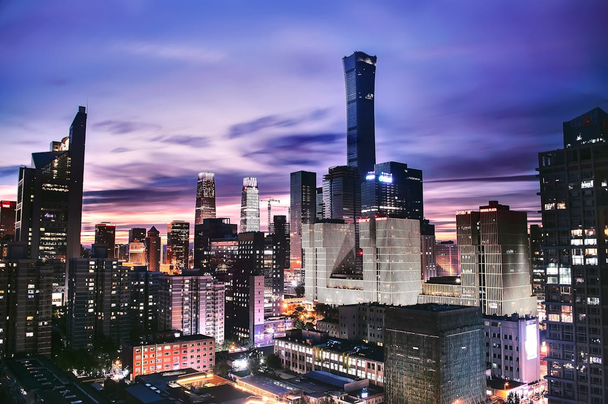
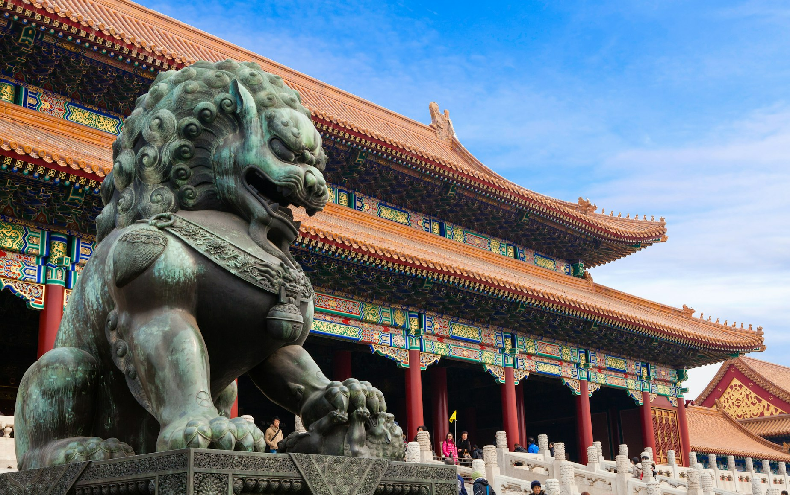

China is a country with a long and fascinating history. It's one of the oldest civilizations (more than 5,000 years) and offers the world a grand culture that creates admiration. China has contributed immensely to global culture, science, and philosophy, making it a huge landmark of human civilization. Major dynasties such as the Xia, Shang, Zhou, Qin, Han, Tang, and Ming shaped China's identity. China also has a population of 1.412 billion.
China is known for its groundbreaking inventions that transformed the world, such as gunpowder, printing, papermaking, compass, silk and porcelain.
Cities and Landmarks
Chinese cities and their landmarks have always been a source of beauty. One of the things that make China great is that the mixture of past and future creates a wonderful image. While exploring China, you will witness that the rich history of the country and the indicators of an upcoming and exciting future will accompany you as well.
北京 Beijing
Beijing has been a city with huge importance for over 3,000 years. Since it has been the political and cultural center of China for a very long time, its unique significance can be seen in numerous historical landmarks and historical sites.
One of the best aspects of this city is the fact that ancient traditions and modern advancements coexist harmoniously. It's a vibrant metropolis with a deep historical legacy and a dynamic contemporary culture.

Beijing is a global city and one of the world's leading centres for culture, diplomacy, politics, finance, business and economics, education, research, language, tourism, media, sport, science and technology and transportation and art. It is home to the headquarters of most of China's largest state-owned companies and houses the largest number of Fortune Global 500 companies in the world, as well as the world's four biggest financial institutions by total assets.

Forbidden City, for almost 500 years, the Forbidden City was the political and ceremonial center of Chinese government. It was the residence of emperors and their families, as well as the administrative center of the empire.
The Summer Palace is a vast ensemble of lakes, gardens, and palaces used by the Qing Dynasty emperors as a summer retreat.The Temple of Heaven was used by emperors of the Ming and Qing dynasties for annual ceremonies of prayer to Heaven for a good harvest.
上海 Shanghai
Shanghai is the most populous urban area in China. Shanghai has been described as the "showpiece" of the economy of China. Featuring several architectural styles such as Art Deco and shikumen.
Shanghai is a tourist destination famous for historical landmarks as well as modern, ever-expanding skylines. Yu Yuan Garden is a classical Chinese garden located in the Old City of Shanghai. It was built in the Ming Dynasty and is renowned for its beautiful landscapes, ponds, rockeries, and pavilions.
One of Shanghai's tallest buildings, the Jin Mao Tower is an architectural marvel with a height of 420.5 meters (1,380 feet). It combines traditional Chinese design elements with modern skyscraper aesthetics.
广州 Guangzhou
Guangzhou is at the heart of the Guangdong-Hong Kong-Macau Greater Bay Area. The port of Guangzhou serves as a transportation hub and Guangzhou is one of China's three largest cities. For a long time it was the only Chinese port accessible to most foreign traders.
The Dafo Temple is a grand temple with a history of more than one thousand years and was built by Emperor Liu Yan in the Southern Han dynasty (917-971).Guangzhou is a major Asia-Pacific research and development hub with a high level of scientific research output, ranking 8th globally and 4th in the Asia-Pacific, and is home to many of China's most prestigious universities.
西安市 Xi'an
Xi'an is famous for its historical significance, including the Terracotta Army and its role as the starting point of the Silk Road. The city has a rich cultural and historical heritage with landmarks such as the City Wall and the Big Wild Goose Pagoda.
Stretching over 13,000 miles, the Great Wall is one of the most iconic symbols of China. It was built to protect against invasions from northern tribes.Discovered in 1974, the Terracotta Army consists of thousands of life-sized clay soldiers, horses, and chariots buried with the first Emperor of China, Qin Shi Huang. It was intended to protect him in the afterlife.
The capital of Shaanxi Province and one of the Four Great Ancient Capitals of China.
成都Chengdu
Chengdu is the capital of Sichuan Province in southwestern China and is known for its rich history and vibrant culture. Chengdu has a history dating back over 2,000 years. It was an important city during the Qin Dynasty and served as the capital of the Shu Han state during the Three Kingdoms period.The city is renowned for its rich cultural heritage, which includes traditional Sichuan opera, teahouses, and a distinctive culinary tradition. Chengdu is often described as having a laid-back, relaxed atmosphere. It's known for its leisurely pace of life, with locals enjoying long tea sessions and leisurely strolls through parks. The city has numerous parks and green spaces, including the People’s Park and Wangjianglou Park, providing residents and visitors with a respite from urban life.
Chengdu is famous for its role in panda conservation. The Chengdu Research Base of Giant Panda Breeding is a leading center for panda breeding and research. It is one of the best places to see giant pandas up close and learn about conservation efforts. Visitors can see pandas at various stages of life, from newborns to adults. The base also offers opportunities for educational programs and volunteering.
The giant panda is considered a national treasure in China. It symbolizes peace, friendship, and the natural beauty of the country. In fact, pandas have been used in “panda diplomacy,” where China gifts or lends pandas to foreign countries as a gesture of goodwill. Pandas are a conservation symbol worldwide due to their endangered status. Thanks to efforts in places like Chengdu, the status of pandas has improved from "endangered" to "vulnerable," but they still require ongoing protection.
Beautiful Landmarks
Other than its unique cities, China also offers its visitors lots of stunning landmarks.
漓江 Li River
The 439-kilometre (273 mi) course of the Li and Gui Rivers is flanked by green hills. Cormorant fishing is often associated with the Lijiang.Cruises on the Li are famous, attracting millions of visitors per year.
布达拉宫 Potala Palace
The Potala Palace in Tibet served as the winter residence of the Dalai Lama and is a symbol of Tibetan Buddhism. It is situated on Red Mountain and offers panoramic views of Lhasa. The palace has a complex layout with numerous halls, chapels, and Buddhist relics, and it is a UNESCO World Heritage Site.
大足石刻 Dazu Rock Carvings
The Dazu Rock Carvings are a series of Chinese religious sculptures and carvings. They date from the 7th to the 13th century and are notable for their detailed depictions of Buddhist, Taoist, and Confucian themes.The carvings are divided into several sites, including Beishan, Nanshan, and Baoding Hill.
日月双塔 Sun and Moon Pagodas
The Sun and Moon Pagodas or the Twin Pagodas, are iconic landmarks located in Guilin, a city in southern China famous for its stunning karst mountains and picturesque scenery. These pagodas are a striking feature on the city's Shanhu Lake (Fir Lake), and they represent a beautiful fusion of ancient Chinese architecture and modern technology.The Sun Pagoda symbolizes masculinity (yang), while the Moon Pagoda represents femininity (yin). Together, they embody the harmonious balance of the ancient Yin and Yang philosophy. The sun and moon in Chinese culture often symbolize light and darkness, time, and the cyclical nature of life.